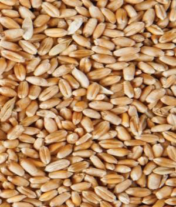
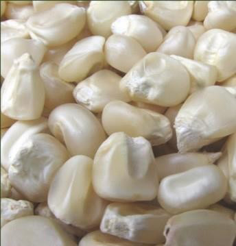
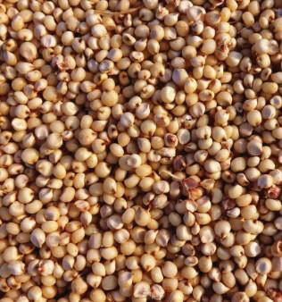
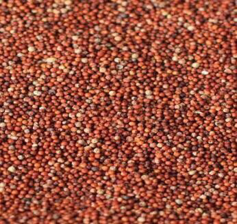

Food and Human Nutrition
Form Two



Wheat
Maize
Sorghum

Finger millet
Pearl millet
Rice
Figure 2.1: Different types of cereals
Wheat
Wheat grain is generally oval shape. It is brown on the outside and white on the inside. Wheat grain contains various nutrients distributed on its different parts.
The endosperm is rich in starch and protein. The bran contains large quantities of dietary fibre; B vitamins such as B1, B2, B3, B6, and folate; small amount of minerals including iron, magnesium, zinc, phosphorus, copper and manganese. The Germ is the embryo or sprouting part of wheat grain. It contains a small amount of protein and a greater share of B vitamins, lipids and trace minerals. The Aleurone is a thin layer between the bran and the endosperm while Scutellum is also a thin layer between the germ and the endosperm. Both layers contain high amounts of B vitamins. The protein substance present in wheat is known as gluten. It causes stretching of dough when water is added to the wheat flour.